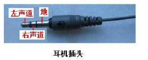

audio — 提供音频播放录音的相关功能
该模块提供音频录音播放功能,使用P8和P9引脚作为音频解码输出。 由于掌控板无集成喇叭,并不能直接播放音源。你可以使用带集成喇叭的扩展板或自己将P8,P9外接至功放喇叭。
掌控板接3.5mm耳机方法:
P8 – 左声道
P9 – 右声道
GND – GND
{kind=link}

函数
基础音频函数
播放
- audio.player_init()
音频播放初始化,为音频解码开辟缓存
- audio.play(url)
本地或网络音频播放,目前只支持wav,mp3格式音频。
可以播放文件系统的MP3音频,或者网络的MP3音频资源。播放本地mp3音频由于受micropython文件系统限制和RAM大小限制,当文件大于1M基本很难下载下去。所以对音频文件的大小有所限制,应尽可能的小。 当播放网络MP3音频,须先连接网络,URL必须是完整地址,如”http://wiki.labplus.cn/images/4/4e/Music_test.mp3” 。返回解码状态,当为0,说明可接受音频解码指令;当为1,说明当前正处解码状态,不能响应。
url(str): 音频文件路径,类型为字符串。可以是本地路径地址,也可以是网络上的URL地址。
播放MP3音频
1import audio # 导入audio
2from mpython import wifi # 导入wifi
3
4mywifi=wifi() # 实例wifi类
5mywifi.connectWiFi('ssid','password') # 连接 WiFi 网络
6
7audio.player_init() # 播放初始化
8audio.play('music.mp3') # 本地音频解码
9audio.play("http://wiki.labplus.cn/images/4/4e/Music_test.mp3") # 播放网络音频url
10audio.player_deinit() # 播放结束,释放资源
- audio.set_volume(vol)
设置音频音量
vol: 音量设置,范围0~100
- audio.stop()
音频播放停止
- audio.pause()
音频播放暂停
- audio.resume()
音频播放恢复,用于暂停后的重新播放
- audio.player_status()
用于获取系统是否处于音频播放状态,返回1,说明正处于播放中,返回0,说明播放结束,处于空闲。
- audio.player_deinit()
音频播放结束后,释放缓存
录音
- audio.recorder_init()
录音初始化
- audio.record(file_name, record_time=5)
录制音频,并以 wav 格式存储。音频参数为8000Hz采样率,16位,单声道。
file_name- wav文件存储路径record_time- 录音时长,默认5秒。录音时长受文件系统空间限制,最大时长依实际情况而定。
- audio.recorder_deinit()
录音结束后释放资源
示例-录音:
import audio
from mpython import *
audio.recorder_init()
rgb[0] = (255, 0, 0) # 用LED指示录音开始结束
rgb.write()
audio.record('test.wav',5)
rgb[0] = (0, 0, 0)
rgb.write()
audio.recorder_deinit()